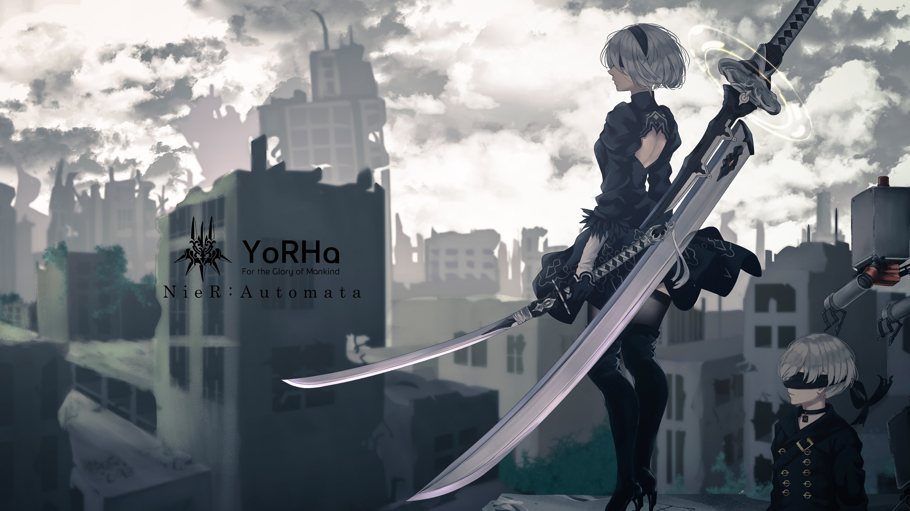
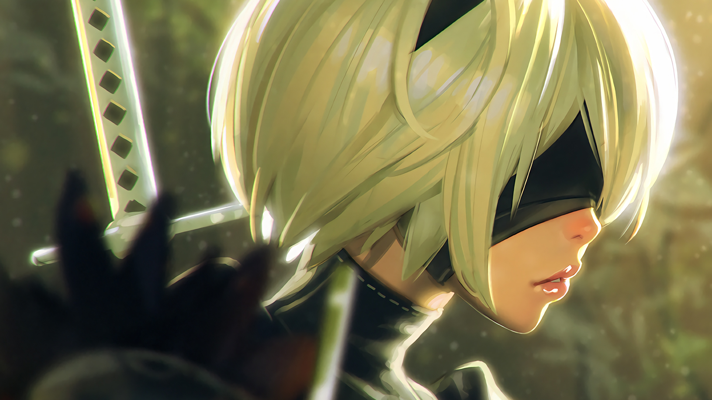

HtmlToImg Demo
by：jczzq
《尼尔：机械纪元》除了懂人心的小姐姐2B以外，其自身的的游戏品质也延续了白金工作室的一贯水准，受到了玩家们的欢迎和喜爱，前段时间本作的销量也已突破了100万份。而玩家们的购买热情还不止于此，不少粉丝还希望体验一下前作《尼尔》的魅力，而SE也回应了玩家们的期待。
Reddit网友lupianwolf近日发现了这个有趣的现象，他表示PS3版的《尼尔》光盘在欧洲区又重新印制并且上架了SE商店。不知道在其他地区会不会采取同样的举措。
《尼尔》本身评价不一，销量也远远不及近日发售的《尼尔：机械纪元》，不过对于粉丝们来说，现在这也是个好机会尝试一下前作《尼尔》，对比、了解一下两部作品间的差异和联系。还能看看各位都很喜欢的扶她小姐姐卡伊奈。

《尼尔》发售于2010年，登陆PS3/Xbox 360平台，由Cavia开发，日版和欧美地区发售的版本也存在着一定的差异，例如日版的主角是一位年轻人，而到了欧美地区则变成了一位相当粗犷的壮汉——前者在剧情中是为了拯救自己的妹妹，而后者则是为了拯救自己的女儿。

注意：
1.不支持内含跨域图片